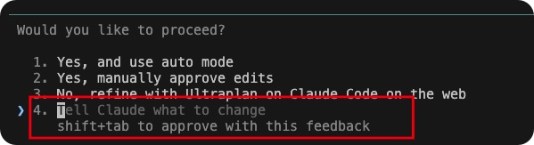

Reviewing Claude Code's work: review the plan, the execution, or both
Principle 3 says the reviewer should not be the builder. In practice that means two separate review passes — one on the plan before anything runs, one on the diff after the run. Which one you need depends on how expensive it is to execute the work.
What to review: plan, execution, or both?
Before picking a review command, decide which stage to review. The rule I use is: how costly is it to re-run the work?
- Review the plan when re-executing is slow or expensive. GPU training runs, large LLM API calls, long Stata pipelines over big data — anything that costs hours or real money to repeat. It is much cheaper to catch a bad premise on paper than after the run completes.
- Review the execution when the work is cheap to replicate. Local data cleaning, analysis scripts, website edits, small refactors. Let the agent try, then attack the diff.
- Both is always safe. Default to both when the task is unfamiliar or the blast radius is unclear.
The mechanism is the same in each case: after Claude Code returns a plan in Plan Mode, it asks "Would you like to proceed?" with four options. Pick option 4 — "Tell Claude what to change" — and type a review command as the feedback. Claude then runs the review instead of proceeding, and comes back with the results for you to absorb.

Claude Code's approval prompt after plan mode. Pick option 4 — "Tell Claude what to change" — and type a review command as the feedback.
Reviewing the plan
When Claude finishes planning, it calls ExitPlanMode and the four-option prompt above appears. This is the moment to review.
Pick option 4. Do not pick 1, 2, or 3 yet. As the feedback, type something like:
run /document-review on the plan first, absorb the comments,
update the plan, then stop and ask me again/document-review comes from the Compound Engineering plugin. It spawns parallel persona reviewers against the plan file on disk — a feasibility lens, a scope lens, a security lens, and others — each returning comments from a blank slate.
Re-approve with option 1 or 2 when you are satisfied. Only then does execution begin.
Reviewing the execution
The trick for execution review is to bake it into the plan during planning, not after. While you are still on the first "Would you like to proceed?" prompt after plan mode, pick option 4 and type something like:
add a final step to the plan: run /codex:adversarial-review
(or /ce:review) on the full diff at the end, absorb the
comments, fix the affected code, and re-run the pipeline step
that changedClaude Code rewrites the plan to include the review, then asks you to approve again. From that point the review runs automatically as the last step of execution — you do not have to remember to trigger it.
The two review commands. /codex:adversarial-review delegates the review to a Codex-powered model — a genuinely different brain reading the diff with no knowledge of how it was built. I reach for this when I want the strongest blank-slate critique. /ce:review runs Compound Engineering's tiered multi-persona review locally — correctness, maintainability, testing, plus conditional personas the diff triggers (security, data migrations, API contracts). Same "second agent with a blank slate" idea as /document-review, pointed at code instead of prose.
Source
Both plugins come from Every's Compound Engineering ecosystem, installable into Claude Code via the plugin marketplace. Compound Engineering itself is covered in Dispatch #9.